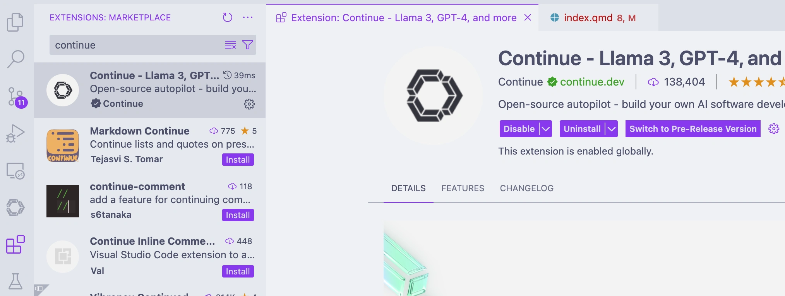
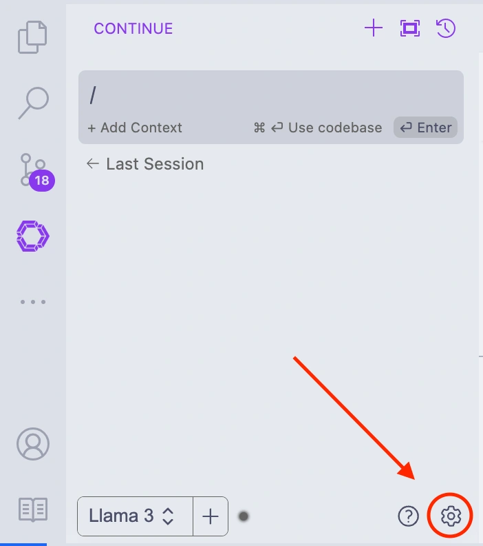
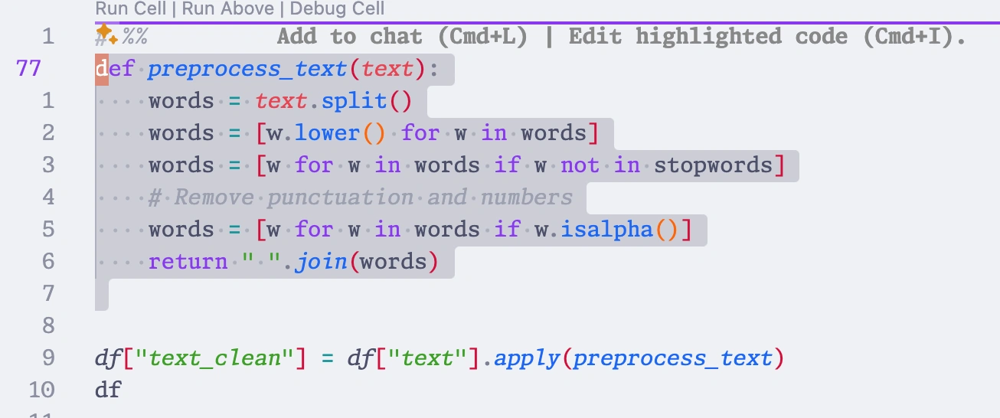
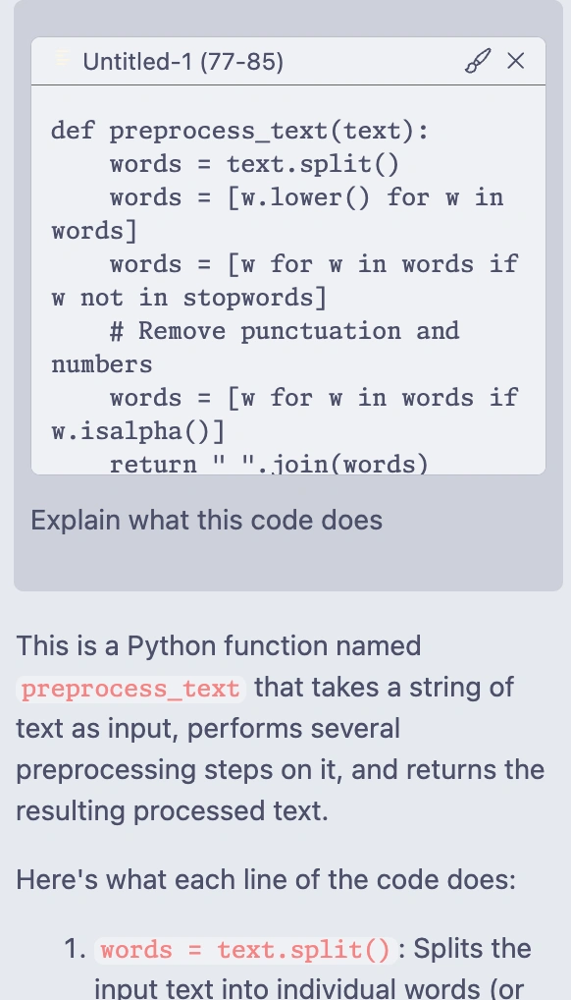
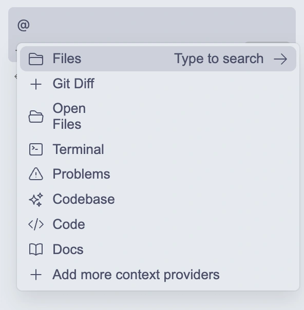
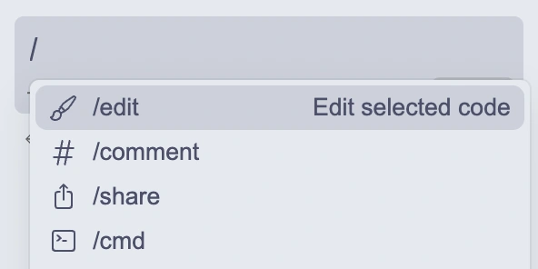
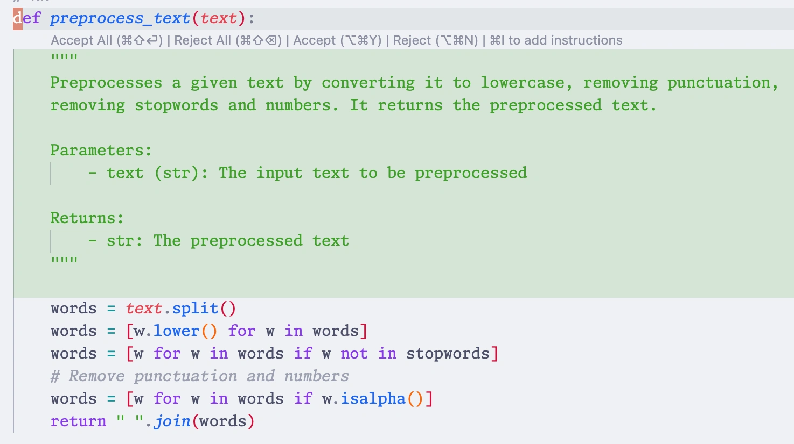
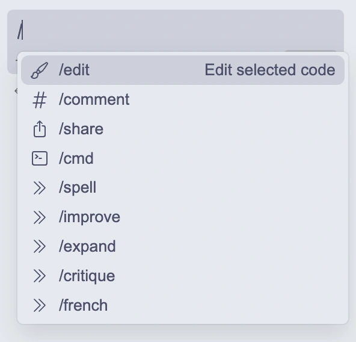

GitHub Copilot is an amazing AI-assistant that helps developers write code faster and with fewer errors. However, it does have some limitations, such as the need for an internet connection–not ideal for airplane mode–and it sends your code to cloud servers for processing. In this post, I will show how you can use Continue, a Visual Studio Code extension that provides an AI-assistant, with Ollama, a tool to manage and run local LLMs, to get similar functionality as GitHub Copilot without the need for an internet connection or sending your code to the cloud. Your code stays on your machine, and best of all it is all free.
This setup allows you to have a private, local AI-powered coding and writing assistant that runs on your machine and doesn’t require an internet connection. Indeed, this works not only for coding but also for writing if you use Visual Studio Code for writing in LaTeX or Markdown, for example.
Video tutorials
The content of this post is also available as two video tutorials on YouTube.
Ollama
Ollama is a tool to manage and run local LLMs, such as Meta’s Llama3. I discussed how to use Ollama as a private, local ChatGPT replacement in a previous post. Ollama can also be used to run LLMs for code completion, such as Codellama, which is a model trained on code.
Install Ollama
The first step in setting up Ollama is to download and install the tool on your local machine. The installation process is straightforward and involves running a few commands in your terminal. Ollama’s download page provides installers for macOS and Windows, as well as instructions for Linux users. Once you’ve downloaded the installer, follow the installation instructions to set up Ollama on your machine.
If you’re using a Mac, you can install Ollama using Homebrew by running the following command in your terminal:
brew install ollamaThe benefit of using Homebrew is that it simplifies the installation process and also sets up Ollama as a service, allowing it to run in the background and manage the LLM models you download.
At the moment, the most popular code models on Ollama are:
After installing Ollama, you can install a model from the command line using the pull command:
ollama pull codellamaWhile you can run the model from the command line, it is more convenient to use it with Continue, a Visual Studio Code extension that provides an AI-assistant directly in your editor.
Continue
Continue is an open-source autopilot for developers that seamlessly integrates with popular IDEs like VS Code and JetBrains. It offers features such as task and tab autocomplete, allowing it to generate, refactor, and explain entire sections of code efficiently. With Continue, developers can easily highlight sections of code to get another perspective on their work, ask specific coding questions, instruct the tool to refactor code in natural language, or even generate new files from scratch across various programming languages and frameworks. This makes coding more intuitive and significantly reduces the need for manual lookups or switching between windows for assistance.
One of the most compelling aspects of Continue is its flexibility and integration capabilities. It allows developers to choose from a wide array of large language models (LLMs) and providers, whether deploying locally or in the cloud. Continue ensures that your codebase serves as context for queries, enhancing the relevance and accuracy of its assistance. Its local-first, modular design promotes offline use and privacy, making it a great alternative to cloud-based solutions like GitHub Copilot.
Installing Continue in Visual Studio Code
To use Continue, you need to install the Visual Studio Code extension. You can find it in the Visual Studio Code Marketplace. Once installed, the Continue icon will appear in your left sidebar. For better accessibility, the Continue developers recommended placing it on the right-hand side. This lets you keep the assistant open while accessing other features in the left sidebar.

Once installed, you can configure it to use Ollama as a provider for code completion in your Continue config file, which you can access by clicking on the gear icon in the Continue sidebar.

~/.continue/config.json:
{
"models": [
{
"title": "Llama 3",
"provider": "ollama",
"model": "llama3"
},
{
"title": "Ollama",
"provider": "ollama",
"model": "AUTODETECT"
}
],
...
}If you have multiple models installed, you can add them similarly. This allows you to switch between models for different tasks, providing flexibility in your workflow.
Using Continue as a coding assistant
Continue offers several features that can help you write code more efficiently, including understanding code, refactoring code, and debugging code. There are two main ways to interact with Continue: through the chat interface and with inline commands.
Chat interface
To interact with the chat, you can highlight a piece of code and press command-L on Mac or control-L on Windows and Linux to paste it into the chat. You can then ask questions or give instructions to the assistant, and it will provide suggestions based on the context of the code.

You can then tell Continue what you want it to do with the code, such as explain it, refactoring it, or debugging it. Continue will analyze the code and provide suggestions based on the task you specified. You can accept, reject, or retry the suggestions to refine the code further.

In the chat interface, you can also use the @ symbol to mention a specific context, such as your project code, the terminal, or the error panel. This helps Continue understand the context of your query and provide more relevant suggestions.

You can also use the / symbol to access slash commands which are convenient pre-defined commands that you can use to interact with the assistant. For example, you can use /comment to ask Continue to write comments the code, or /cmd to ask it to write a shell command. We will see later how to define your own custom commands.

Inline commands
In addition to the chat interface, Continue also supports inline commands that allow you to interact with the assistant directly in your code editor. You can use these commands to perform specific tasks, such as understanding code, refactoring code, or debugging code, without having to switch to the chat interface. To use it, just highlight the code you want to work on and press command-I on Mac or control-I on Windows and Linux. It will open a prompt where you can specify the task you want to perform, and Continue will provide suggestions based on the context of the code. You will then see the proposed changes, and you can accept, reject, or retry them as needed.

Auto-complete
Continue also supports auto-complete functionality, allowing you to quickly generate code snippets and complete statements as you type. This feature is currently in beta, and I have had mixed results with it. However, it is a promising feature that will likely improve over time.
This feature is particularly useful for speeding up your coding workflow and reducing the time spent on repetitive tasks. The auto-complete feature in Continue is customizable, allowing you to select a different model than for the chat features. This is especially useful because the use case is different and latency is more critical, so you will likely want to use a smaller model optimized for completion instead of a powerful chat model like Llama3.
You can enable or disable auto-complete for specific languages, configure the trigger keys, and adjust the completion delay to fine-tune the behavior of the assistant.
Custom commands
Continue also lets you define custom slash commands that can be used to interact with the AI assistant. This is particularly useful for running specific queries or commands that are not covered by the default functionality. You can define custom commands in the Continue config file and then execute them directly from the editor. This feature allows you to tailor the AI assistant to your specific needs and workflow, making it even more powerful and versatile. In the next section, we’ll explore how to define custom commands in Continue and use them to use Continue as a writing assistant.
Using Continue as a writing assistant
Since I use Visual Studio Code not only for coding but also for writing in LaTeX and Markdown, I wanted to explore how Continue could be used as a writing assistant. While Continue is primarily designed for coding, it can also be used for writing tasks, such as generating text, writing summaries, or providing suggestions for improving your writing. By defining custom commands in the Continue config file, you can tailor the assistant to your specific writing needs and use it to enhance your writing process. Here are the five custom commands I defined specifically to turn Continue into a powerful writing assistant. These should be added to the customCommands section of your config file, and they will appear in the chat menu. You can find my full Continue config file at the end of this post.

{
"name": "french",
"description": "Translate selected text to French",
"prompt": "{{{ input }}}\n\n---\n\n Translate selected text to French. Return the input text free from any typo or grammatical error. Return only the text. Do not include a preamble."
}Spell checking
The first custom command I created is spell. This command checks the spelling and grammar of the selected text. Here’s the configuration:
{
"name": "spell",
"description": "Check spelling and grammar for the selected text",
"prompt": "{{{ input }}}\n\n---\n\n Check the selected text for typos and grammatical errors. Return the input text free from any typo or grammatical error. Return only the text. Do not include a preamble."
}You will first need to select the text you want to check, then press Command + L to send it to the sidebar. Next, type /spell and hit enter. The prompt instructs the assistant to check the selected text (which is fed input the {{ input }} tag) for typos and grammatical errors and return the input text free from any errors. I have tried it with Llama 3 with good results, although it might sometimes include a preamble despite the instruction, this setup generally works well.
You can then use the buttons in the chat interface to copy the corrected text back into your document.
Improving text
When writing, it’s essential to ensure that your text is clear, concise, and free from errors. The improve command helps in making the selected text sound smarter and more professional. Here’s the configuration, I’m using, but you should adjust the prompt to your needs:
{
"name": "improve",
"description": "Improve selected text",
"prompt": "{{{ input }}}\n\n---\n\n Improve the selected text by making it sound smart and professional. Avoid using rare words or overselling. Return the input text free from any typo or grammatical error. Return only the text. Do not include a preamble."
}Expanding text
When writing a first draft, I often like to get my ideas down quickly without worrying too much about the details. This is where the expand command comes in handy. It can turn a single paragraph into many, or take a bullet list and turn it into full sentences. It’s great for overcoming writer’s block, but you will need to edit the output to make sure it fits your style and context. Here’s the configuration I’m using:
{
"name": "expand",
"description": "Expand selected text",
"prompt": "{{{ input }}}\n\n---\n\n Expand selected text as full paragraphs. Make it longer by adding details. Return the input text free from any typo or grammatical error. Return only the text. Do not include a preamble."
}Critiquing text
Getting feedback on your writing is essential for improving your skills. While I have good friends and colleagues who can provide feedback, it’s not always convenient to ask them for help until I have a more polished draft. This is where the critique command comes in handy. It provides constructive feedback on a paragraph or larger text sections. Here’s the configuration I’m using:
{
"name": "critique",
"description": "Critique selected text",
"prompt": "{{{ input }}}\n\n---\n\n Critique the selected text and suggest ways to improve it."
},Translating text
Since I work at a French-language university and teach both in English and French, I often need to translate text to French. I use the french command to translate the selected text into French. Here’s the configuration:
{
"name": "french",
"description": "Translate selected text to French",
"prompt": "{{{ input }}}\n\n---\n\n Translate selected text to French. Return the input text free from any typo or grammatical error. Return only the text. Do not include a preamble."
}Creating Your own commands
Creating custom commands in Continue is straightforward, all you need is to: 1. Choose a unique name for the command. 2. Write a clear description. 3. Craft a prompt that directs the LLM effectively.
You can use my examples as a starting point and modify them to suit your specific writing needs. Experiment with different prompts to see what works best for your needs!
Limitations of Continue
While Continue is a powerful tool that can significantly enhance your coding and writing workflow, it does have some limitations. The most significant for my personal workflow is that it uses a global configuration that applies to all Visual Studio Code profiles. I like to have separate profiles based on the type of work I’m doing, such as coding in Python, in Rust, or writing, and it would be nice to have different configurations for each profile. You can somewhat overcome this limitation by having workspace-specific configurations, but it’s not as flexible as having separate profiles.
Other than that, the auto-complete feature is still in beta and can be hit or miss, depending on the model you’re using and the language you’re working with. I’ve had mixed results with it, and it’s not as reliable as the chat interface or inline commands. However, it’s a promising feature that will likely improve over time as the technology matures.
Lastly, Continue relies on LLMs to provide suggestions and assistance, so the quality of the suggestions you receive will depend on the model you’re using. Some models are more accurate and reliable than others, so it’s essential to experiment with different models to find the one that works best for your needs. Continue provides a wide range of models to choose from, so you can select the one that best fits your workflow and coding style.
Conclusion
For my part, while I do use Continue on occasion, my daily driver for code completion is still GitHub Copilot, as it provides a more seamless and responsive experience, and I’m willing to trade off the privacy and control of a local solution for the convenience and reliability of a cloud-based one. However, I’m glad to have the option to use Ollama and other local LLMs when I need them, and I’m excited to see how this technology continues to evolve and improve in the future.
And as for writing goes, the custom commands I defined in Continue have proven to be quite useful, and I find myself using them more and more to improve my writing and generate text. I’m looking forward to exploring more ways to use Continue as a writing assistant and to see how it can help me become a better writer.
Full Continue config file
Here is my full Continue config file, which includes the models, slash commands, custom commands, context providers, and other settings I use with Ollama. You can use this as a template to configure Continue with your preferred settings and providers. I try to keep it as minimal as possible and will update it as I discover new features or providers that I want to use.
{
"models": [
{
"title": "Llama 3",
"provider": "ollama",
"model": "llama3"
},
{
"title": "Ollama",
"provider": "ollama",
"model": "AUTODETECT"
}
],
"slashCommands": [
{
"name": "edit",
"description": "Edit selected code"
},
{
"name": "comment",
"description": "Write comments for the selected code"
},
{
"name": "share",
"description": "Download and share this session"
},
{
"name": "cmd",
"description": "Generate a shell command"
}
],
"customCommands": [
{
"name": "spell",
"description": "Check spelling and grammar for the selected text",
"prompt": "{{{ input }}}\n\n---\n\n Check the selected text for typos and grammatical errors. Return the input text free from any typo or grammatical error. Return only the text. Do not include a preamble."
},
{
"name": "improve",
"description": "Improve selected text",
"prompt": "{{{ input }}}\n\n---\n\n Improve the selected text by making it sound smart and professional. Avoid using rare words or overselling. Return the input text free from any typo or grammatical error. Return only the text. Do not include a preamble."
},
{
"name": "expand",
"description": "Expand selected text",
"prompt": "{{{ input }}}\n\n---\n\n Expand selected text as full paragraphs. Make it longer by adding details. Return the input text free from any typo or grammatical error. Return only the text. Do not include a preamble."
},
{
"name": "critique",
"description": "Critique selected text",
"prompt": "{{{ input }}}\n\n---\n\n Critique the selected text and suggest ways to improve it."
},
{
"name": "french",
"description": "Translate selected text to French",
"prompt": "{{{ input }}}\n\n---\n\n Translate selected text to French. Return the input text free from any typo or grammatical error. Return only the text. Do not include a preamble."
}
],
"contextProviders": [
{
"name": "diff",
"params": {}
},
{
"name": "open",
"params": {}
},
{
"name": "terminal",
"params": {}
},
{
"name": "problems",
"params": {}
},
{
"name": "codebase",
"params": {}
},
{
"name": "code",
"params": {}
},
{
"name": "docs",
"params": {}
}
],
"allowAnonymousTelemetry": true,
"tabAutocompleteModel": {
"title": "sc",
"provider": "ollama",
"model": "starcoder2:3b"
},
"embeddingsProvider": {
"provider": "transformers.js"
}
}